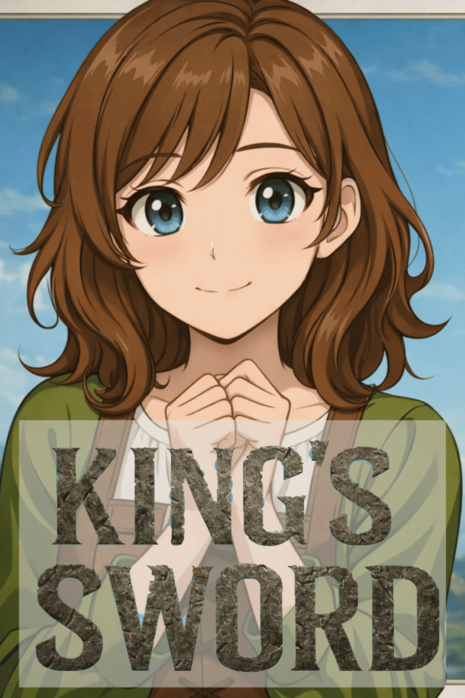

WORLD & STORY
隔離された王侯の学園
古代から中世へ移行する時代。大戦争の末に平和条約が結ばれたが、裏では避難民がゾンビ化し爆発的に増加。各国はゾンビの侵攻による疲弊を恐れ、王位継承者たちを中立国家の「学園」に人質として隔離した。
完全自給自足が可能な防衛施設「学園」で、王族たちは将来の覇権を巡って争っていた。そこに偶然、無関係の一般市民の少女・ディアーナが紛れ込む。彼女の強烈な個性と予測不能な行動が、権力構造とゾンビ制圧の運命を大きく狂わせていく。

古代から中世へ移行する時代。大戦争の末に平和条約が結ばれたが、裏では避難民がゾンビ化し爆発的に増加。各国はゾンビの侵攻による疲弊を恐れ、王位継承者たちを中立国家の「学園」に人質として隔離した。
完全自給自足が可能な防衛施設「学園」で、王族たちは将来の覇権を巡って争っていた。そこに偶然、無関係の一般市民の少女・ディアーナが紛れ込む。彼女の強烈な個性と予測不能な行動が、権力構造とゾンビ制圧の運命を大きく狂わせていく。
ゾンビの組織を加工して作られたおぞましい武器。ゾンビに対して強い拒絶反応を示すため戦闘において極めて有効だが、同時にプレイヤー自身が寄生虫などに感染するリスク（ハイリスク・ハイリターン）を常に背負う。
ホラー特有の「逃げ惑う恐怖感・緊迫感」と、敵を狩る「一転攻勢の爽快感」をシームレスに切り替える。
※対象枠に接触（ホバー）すると感染リスクのノイズ演出が発生します。
主人公格。12歳の一般市民。王族の逃亡と間違えられて拉致された。知的好奇心と豊富な社会経験（サバイバル力）で各勢力から「王妃候補」として黙認される。アイルー的なサポート役。
戦争のみで王となった外道だが、内政や諜報にも優れる。唯一王族の血を持たない。
良血の申し子。兄たちを封じ込めて継承者となった王女。繊細で機敏な双剣使い。
没落した王族だが、弱小国を束ね防衛線を築いた執念の王。
「骸武装」の設計者であり研究者。戦闘よりもゾンビ抑制を目指す最優の王。
王位継承者四桁という過酷な帝国で生き残った男。武器を持つと苛烈な人格に変わる。
全国の継承権を持つ外交の要。常に中立を保つ穿龍棍使い。
戦争で国を失い、勝ち上がるしか道がない悲壮の王。
暴走する国民のせいで愚王と呼ばれるが、実は優秀な執政経験者。
北方の築城技術を持つ王女。スラッシュアックスを操る。
西端の王。ゾンビの出自に最も詳しい研究者だが心身ともに疲弊している。